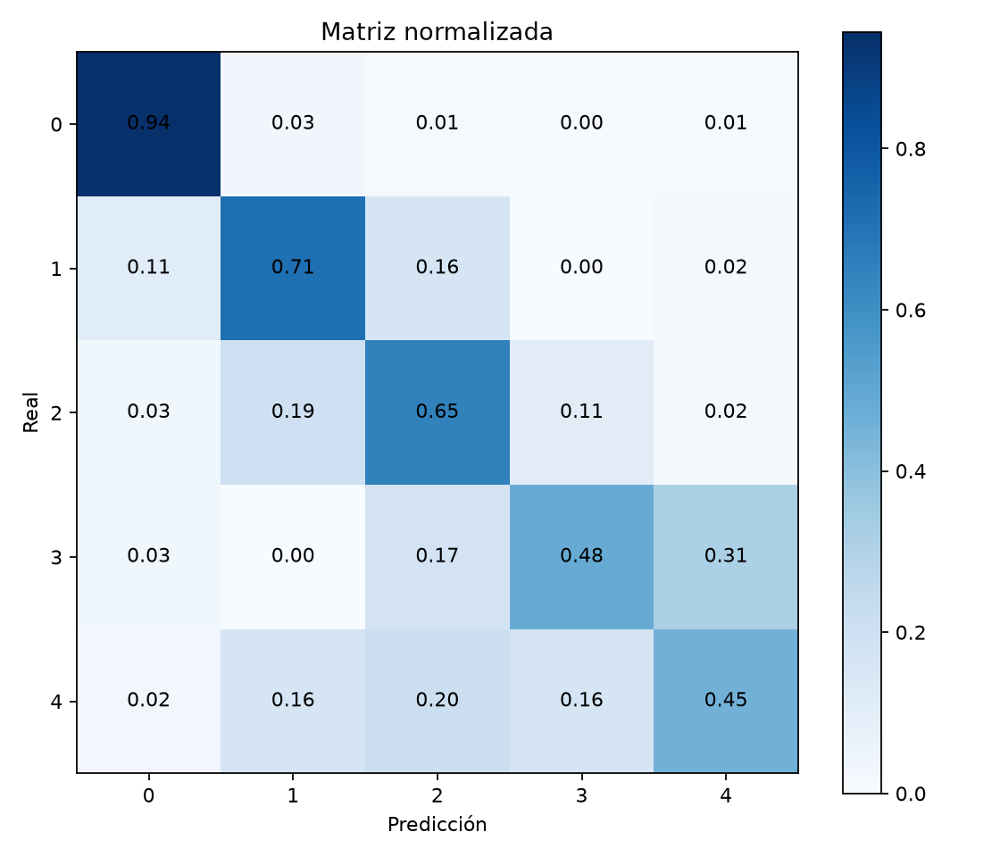
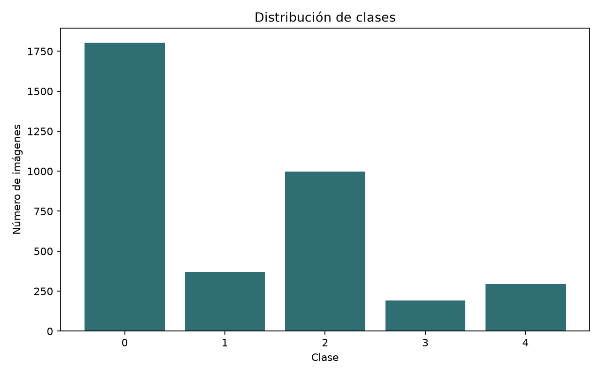
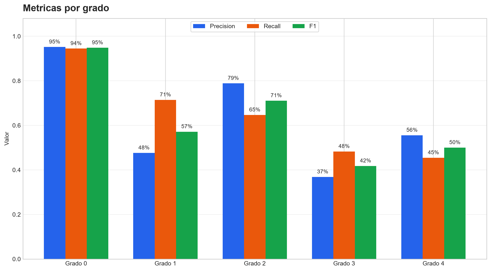
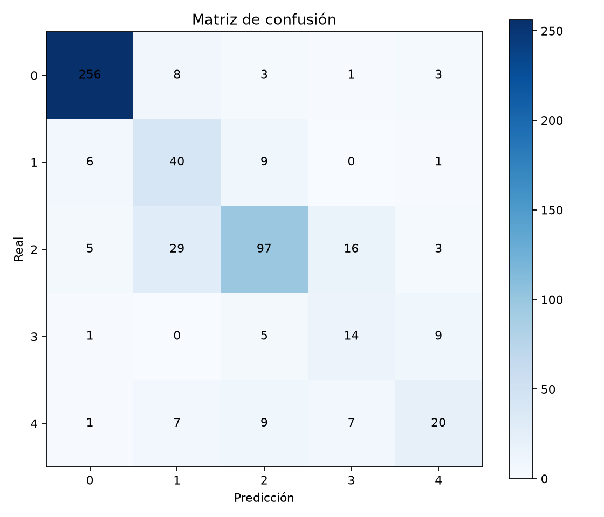
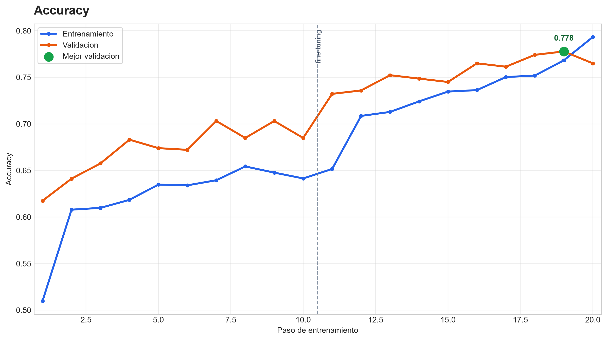
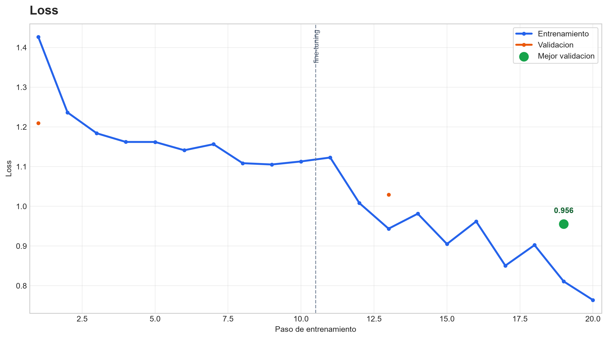
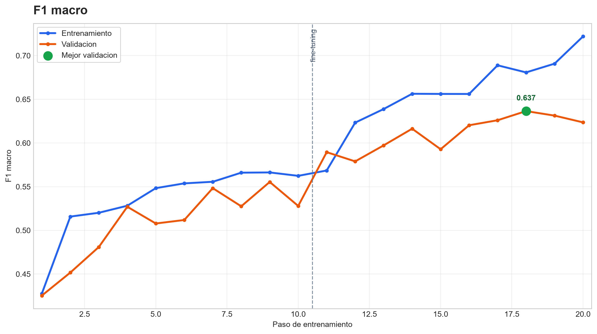
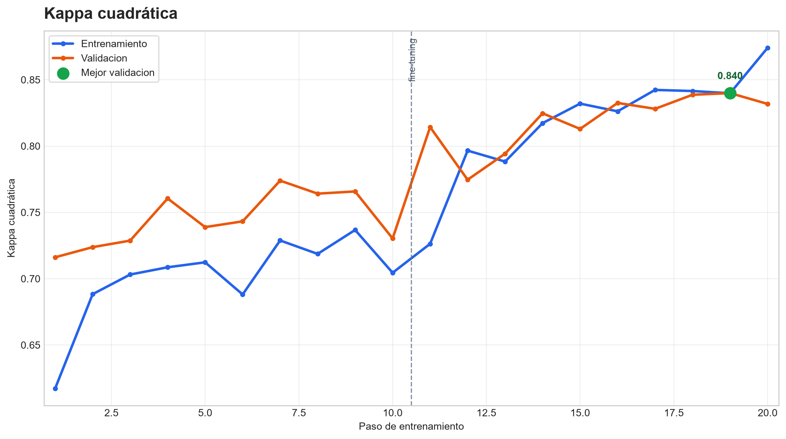
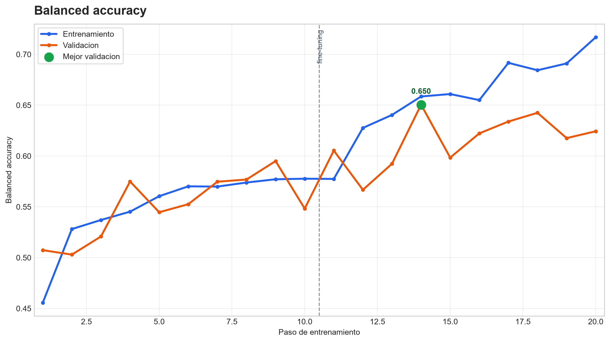
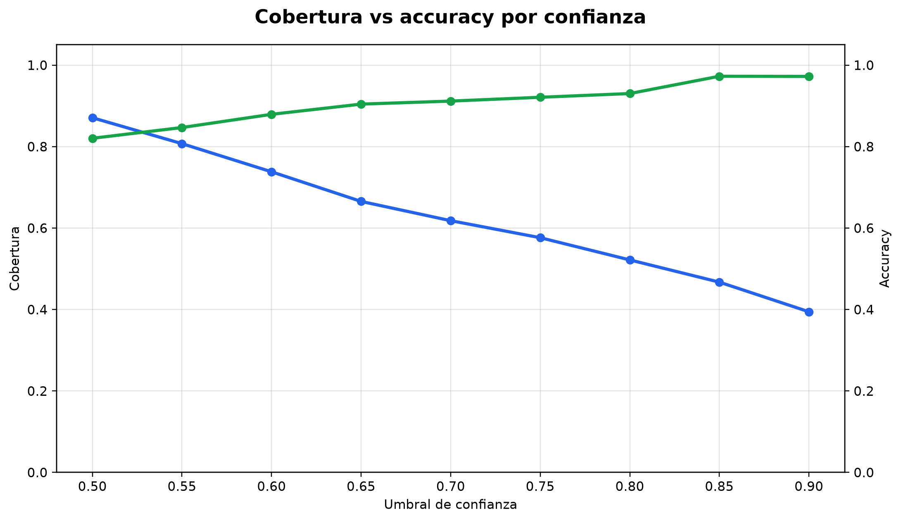

Rendimiento global del checkpoint final sobre el conjunto local de prueba.
RETINAAI
Evaluación retinal asistida
IA para apoyar la detección de retinopatía diabética
Sistema web basado en aprendizaje profundo que analiza imágenes de fondo de ojo, estima el posible grado de retinopatía diabética y aplica una política de seguridad antes de aceptar automáticamente una orientación.
Evalúa el orden clínico de los errores entre grados de severidad.
Capacidad de separacion general entre las cinco clases del problema.
Exactitud en los casos que pasan la política de aceptación automática.
Problema y valor
Una necesidad clinica con impacto social
El informe plantea la retinopatía diabética como una causa prevenible de pérdida visual, especialmente crítica donde hay pocos especialistas y acceso limitado a evaluación retinal.
1
Detección tardía
Muchos casos se identifican en etapas avanzadas, reduciendo oportunidades de tratamiento oportuno.
2
Brecha de especialistas
Centros de salud rurales o de difícil acceso no siempre cuentan con evaluación oftalmológica inmediata.
3
Apoyo a priorizacion
La IA puede orientar seguimiento, repetición de captura o derivación sin reemplazar el criterio profesional.
Metodología CRISP-ML(Q)
El proyecto se organiza como ciclo de calidad de ML
CRISP-ML(Q) permite alinear el objetivo clínico, los datos, el entrenamiento, la evaluación, el despliegue y el mantenimiento del sistema bajo controles de calidad verificables.
CRISP-ML(Q)
Metodología iterativa para construir, validar, desplegar y mantener sistemas de machine learning con calidad.
1
Comprensión del negocio y de los datos
Alinea el propósito del sistema con una necesidad clínica concreta: apoyar la evaluación de retinopatía diabética y priorizar casos que requieren seguimiento o derivación.
Objetivo
Definir usuarios, alcance, problema clínico y utilidad esperada del sistema como apoyo optométrico.
RetinaAI
Se trabaja con imágenes retinales APTOS 2019 y una clasificación multiclase de cinco grados.
KPI / control
Accuracy, F1 macro, kappa, ROC AUC, error grande y cobertura aceptada por política de seguridad.
2
Ingeniería y preparación de datos
Convierte las imágenes crudas en una base utilizable para aprendizaje profundo, cuidando calidad visual, etiquetas y balance entre grados clínicos.
Objetivo
Preparar la materia prima antes del entrenamiento, reduciendo ruido, variabilidad y sesgos.
RetinaAI
Recorte, redimensionamiento, normalización, mejora de contraste, aumento de datos y revisión de distribución.
Control
Verificar clases minoritarias, calidad de imagen, cobertura retinal, nitidez, contraste y consistencia de etiquetas.
3
Ingeniería de modelos
Selecciona y entrena el modelo de clasificación retinal usando PyTorch y transferencia de aprendizaje sobre una arquitectura convolucional.
Objetivo
Construir un modelo capaz de reconocer patrones visuales asociados a grados de retinopatía diabética.
RetinaAI
Checkpoint final entrenado con dataset original, EfficientNet/PyTorch y pesos guardados en `.pth`.
Control QA
Ajuste de hiperparámetros, regularización, pesos de clase, parada temprana y vigilancia de sobreajuste.
4
Evaluación del modelo
Prueba el modelo con datos independientes y analiza si su comportamiento es útil para el objetivo clínico, no solo si obtiene buen accuracy.
Objetivo
Validar precisión, robustez, errores clínicamente relevantes y desempeño por clase.
RetinaAI
Accuracy 79.09%, kappa 86.16%, ROC AUC 92.01% y matriz de confusión sobre 550 imágenes.
Explicabilidad
Grad-CAM se usa como mapa de atención para transparencia, no como diagnóstico definitivo.
5
Despliegue
Integra el checkpoint validado en una aplicación web usable por el profesional, con flujo de paciente, carga de imagen, resultado asistido e historial.
Objetivo
Hacer consumible el modelo por usuarios finales mediante una interfaz clara y segura.
RetinaAI
FastAPI, HTML/CSS/JS, login demo, gestión de pacientes, carga retinal, historial y descarga de reporte.
Seguridad
Política accept/review/reject según confianza, margen top-2 y calidad de imagen.
6
Supervisión y mantenimiento
Controla la degradación del modelo con monitoreo continuo, revisión humana y reentrenamiento cuando existan nuevos datos validados.
Objetivo
Mantener calidad y precisión cuando cambian imágenes, equipos, población o condiciones de captura.
RetinaAI
Revisar casos rechazados, distribución de predicciones, calidad de imagen y señales de data drift.
Mantenimiento
Reentrenar solo con imágenes locales validadas y comparar contra el test original antes de promover cambios.
Pipeline técnico
Del dataset al despliegue web
El flujo técnico materializa las fases de CRISP-ML(Q) dentro del sistema RetinaAI.
Datos
Imágenes retinales etiquetadas del dataset original APTOS 2019.
Preproceso
Recorte, redimensionamiento, normalizacion y mejora de contraste.
Modelo
Red convolucional con transferencia de aprendizaje implementada en PyTorch.
Evaluación
Matriz de confusión, F1 macro, kappa, ROC AUC y errores grandes.
Aplicacion
FastAPI + HTML/CSS/JS para consulta, pacientes, resultados y reportes.
Clasificación clínica
Cinco niveles de severidad
La interfaz final evita mostrar solo números y presenta el posible resultado como nombre clínico comprensible.
Sin retinopatía
No se observan signos de daño retinal asociados a retinopatía diabética.
Leve
Hallazgos iniciales; requiere seguimiento según criterio clínico.
Moderada
Caso referible para evaluación oftalmológica y confirmación.
Severa
Prioridad alta de revisión por riesgo de progresión visual.
Proliferativa
Prioridad alta de derivación especializada por severidad del cuadro.
Apoyo, no diagnóstico definitivo
Grad-CAM y la predicción del modelo aumentan transparencia, pero no sustituyen la evaluación profesional.
Resultados
Métricas principales del checkpoint final
El modelo final fue entrenado con el dataset original, sin combinar datos externos en la versión consolidada.
Medición multiclase
Matriz de confusión
Mejor desempeño en clase sin retinopatía
Las clases intermedias y avanzadas conservan mayor dificultad por similitud visual y desbalance de datos.

Evidencias visuales
Imágenes del análisis y entrenamiento
Estas figuras corresponden a los resultados y auditorías generadas para el modelo final documentado en el informe.
Datos
Distribución de clases
Permite observar el desbalance natural del dataset original.

Métricas
Métricas por clase
Compara precisión, recall y F1 para cada nivel de severidad.

Confusión
Matriz absoluta
Muestra aciertos y errores con conteos reales del conjunto de prueba.

Confusión
Matriz normalizada
Resume el comportamiento relativo del modelo por cada clase real.
Entrenamiento
Curva de accuracy
Evolución de la exactitud durante el proceso de entrenamiento.

Entrenamiento
Curva de pérdida
Seguimiento de la función de pérdida durante el entrenamiento.

Entrenamiento
F1 macro
Indicador útil para evaluar clases desbalanceadas.

Entrenamiento
Kappa cuadrático
Evalúa errores considerando la distancia ordinal entre grados clínicos.

Entrenamiento
Balanced accuracy
Ayuda a leer el desempeño cuando las clases no tienen la misma cantidad de imágenes.

Política
Confianza y cobertura
Visualiza el equilibrio entre aceptar predicciones y mantener seguridad operacional.

Solo se acepta automáticamente lo más confiable
39.82%Cobertura aceptada automáticamente. En ese subconjunto, el accuracy sube a 97.72% y el error grande baja a 0.91%.
Accept, review o reject
La aplicación evalúa confianza, diferencia entre clases, calidad, nitidez, contraste y cobertura retinal. Si la orientación no es suficientemente estable, solicita revisión profesional o nueva captura.
Implementacion
Arquitectura del sistema web
El despliegue se organiza como una app clínica ligera, con modelo incluido y backend de inferencia.
UI
Frontend
HTML, CSS y JavaScript para login, pacientes, evaluación e historial local.
API
Backend
FastAPI recibe imágenes, ejecuta inferencia y devuelve resultados estructurados.
AI
Modelo
Checkpoint PyTorch `best_retina_model.pth` cargado una vez en memoria.
GC
Grad-CAM
Mapa de atención como apoyo visual, no como explicación clínica definitiva.